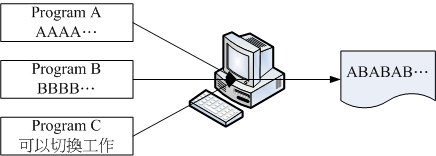

1.2 Torvalds的Linux发展
我们前面一节当中，提到了Unix的历史，也提到了Linux是由Torvalds这个芬兰人所发明的。那么为何托瓦兹可以发明Linux呢？ 凭空想像而来的？还是有什么渊源？这里我们就来谈一谈啰！
1.2.1 与Minix之间
Linus Torvalds（托瓦兹, 1969年出生, [10]）的外祖父是赫尔辛基大学的统计学家， 他的外祖父为了让自己的小孙子能够学点东西，所以从小就将托瓦兹带到身边来管理一些微计算机。 在这个时期，托瓦兹接触了组合语言（Assembly Language），那是一种直接与芯片对谈的程序语言，也就是所谓的低阶语言。 必须要很了解硬件的架构，否则很难以组合语言撰写程序的。
在1988年间，托瓦兹顺利的进入了赫尔辛基大学，并选读了计算机科学系。在就学期间，因为学业的需要与自己的兴趣， 托瓦兹接触到了Unix这个操作系统。当时整个赫尔辛基只有一部最新的Unix系统，同时仅提供16个终端机（terminal）。 还记得我们上一节刚刚提过的，早期的计算机仅有主机具有运算功能，terminal仅负责提供Input/Output而已。在这种情况下， 实在很难满足托瓦兹的需求，因为.....光是等待使用Unix的时间，就很耗时～为此，他不禁想到： “我何不自己搞一部Unix来玩？”不过，就如同Stallman当初的GNU计划一样，要写核心程序，谈何容易～
不过，幸运之神并未背离托瓦兹，因为不久之后，他就知道有一个类似Unix的系统， 并且与Unix完全相容，还可以在Intel 386机器上面跑的操作系统， 那就是我们上一节提过的，谭宁邦教授为了教育需要而撰写的Minix系统！ 他在购买了最新的Intel 386的个人计算机后，就立即安装了Minix这个操作系统。 另外，上个小节当中也谈到，Minix这个操作系统是有附上源代码的， 所以托瓦兹也经由这个源代码学习到了很多的核心程序设计的设计概念喔！
1.2.2 对386硬件的多任务测试
事实上，托瓦兹对于个人计算机的CPU其实并不满意，因为他之前碰的计算机都是工作站型的计算机， 这类计算机的CPU特色就是可以进行“多任务处理”的能力。什么是多任务呢？理论上， 一个CPU在一个时间内仅能进行一个程序， 那如果有两个以上的程序同时出现到系统中呢？举例来说， 你可以在现今的计算机中同时打开两个以上的办公软件，例如电子试算表与文书处理软件。 这个同时打开的动作代表着这两个程序同时要交给CPU来处理～
啊！CPU一个时间点内仅能处理一个程序，那怎么办？没关系，这个时候如果具有多任务能力的CPU就会在不同的程序间切换～ 还记得前一章谈到的CPU频率吧？假设CPU频率为1GHz的话，那表示CPU一秒钟可以进行109次工作。 假设CPU对每个程序都只进行1000次运行周期，然后就得要切换到下个程序的话，那么CPU一秒钟就能够切换106次呢！ （当然啦，切换工作这件事情也会花去一些CPU时间，不过这里暂不讨论）。这么快的处理速度下，你会发现， 两个程序感觉上几乎是同步在进行啦！

Tips 为什么有的时候我同时开两个文件（假设为A, B文件）所花的时间， 要比开完A再去开B文件的时间还要多？现在是否稍微可以理解？ 因为如果同时打开的话，CPU就必须要在两个工作之间不停的切换～ 而切换的动作还是会耗去一些CPU时间的！所以啰，同时启用两个以上的工作在一个CPU上， 要比一个一个的执行还要耗时一点。这也是为何现在CPU开发商要整合多个CPU于一个芯片中！ 也是为何在运行情况比较复杂的服务器上，需要比较多的CPU负责的原因！
早期Intel x86架构计算机不是很受重视的原因，就是因为x86的芯片对于多任务的处理不佳， CPU在不同的工作之间切换不是很顺畅。但是这个情况在386计算机推出后，有很大的改善。 托瓦兹在得知新的386芯片的相关信息后，他认为，以性能价格比的观点来看， Intel的386相当的便宜，所以在性能上也就稍微可以将就将就 ^_^。最终他就贷款去买了一部Intel的386来玩。
早期的计算机性能没有现在这么好，所以压榨计算机性能就成了工程师的一项癖好！ 托瓦兹本人早期是玩组合语言的，组合语言对于硬件有很密切的关系，托瓦兹自己也说：“我始终是个性能癖”^^。 为了彻底发挥386的性能，于是托瓦兹花了不少时间在测试386机器上！ 他的重要测试就是在测试386的多功性能。首先，他写了三个小程序，一个程序会持续输出A、一个会持续输出B， 最后一个会将两个程序进行切换。他将三个程序同时执行，结果，他看到屏幕上很顺利的一直出现ABABAB...... 他知道，他成功了！ ^^
图1.2.1、386计算机的多任务测试
Tips 要达到多工（multitasking）的环境，除了硬件（主要是CPU）需要能够具有多任务的特性外，操作系统也需要支持这个功能喔！ 一些不具有多任务特性的操作系统，想要同时执行两个程序是不可能的。除非先被执行的程序执行完毕，否则， 后面的程序不可能被主动执行。
至于多任务的操作系统中，每个程序被执行时，都会有一个最大CPU使用时间，若该工作运行的时间超过这个CPU使用时间时， 该工作就会先被丢出CPU的运行中，而再度的进入核心工作调度中等待下一次被CPU取用来运行。
这有点像在开记者会啦，主持人（CPU）会问“谁要发问”？一群记者（工作程序） 就会举手（看谁的工作重要！），先举手的自然就被允许发问，问完之后， 主持人又会问一次谁要发问，当然，所有人（包括刚刚那个记者）都可以举手！ 如此一次一次的将工作给他完成啊！ ^_^ 多任务的环境对于复杂的工作情况，帮助很大喔！
1.2.3 初次释出Linux 0.02
探索完386的硬件性能之后，终于拿到Minix并且安装在托瓦兹的386计算机上之后，托瓦兹跟BBS上面一堆工程师一样， 他发现Minix虽然真的很棒，但是谭宁邦教授就是不愿意进行功能的加强，导致一堆工程师在操作系统功能上面的欲求不满！ 这个时候年轻的托瓦兹就想：“既然如此，那我何不自己来改写一个我想要的操作系统？” 于是他就开始了核心程序的撰写了。
撰写程序需要什么呢？首先需要的是能够进行工作的环境，再来则是可以将源代码编译成为可可执行文件的编译器。 好在有GNU计划提供的bash工作环境软件以及gcc编译器等自由软件， 让托瓦兹得以顺利的撰写核心程序。他参考Minix的设计理念与书上的程序码，然后仔细研究出386个人计算机的性能最优化， 然后使用GNU的自由软件将核心程序码与386紧紧的结合在一起，最终写出他所需要的核心程序。 而这个小玩意竟然真的可以在386上面顺利的跑起来～还可以读取Minix的文件系统。 真是太好了！不过还不够，他希望这个程序可以获得大家的一些修改建议， 于是他便将这个核心放置在网络上提供大家下载，同时在BBS上面贴了一则消息：
Hello everybody out there using minix-
I'm doing a （free） operation system （just a hobby,
won't be big and professional like gnu） for 386（486） AT clones.
I've currently ported bash （1.08） and gcc （1.40）,
and things seem to work. This implies that i'll get
something practical within a few months, and I'd like to know
what features most people want. Any suggestions are welcome,
but I won't promise I'll implement them :-）
他说，他完成了一个小小的操作系统，这个核心是用在386机器上的， 同时，他真的仅是好玩，并不是想要做一个跟GNU一样大的计划！ 另外，他希望能够得到更多人的建议与回馈来发展这个操作系统！这个概念跟Minix刚好背道而驰呢！ 这则新闻引起很多人的注意，他们也去托瓦兹提供的网站上下载了这个核心来安装。 有趣的是，因为托瓦兹放置核心的那个FTP网站的目录为：Linux， 从此，大家便称这个核心为Linux了。（请注意，此时的Linux就是那个kernel喔！ 另外，托瓦兹所丢到该目录下的第一个核心版本为0.02呢！）
同时，为了让自己的Linux能够相容于Unix系统，于是托瓦兹开始将一些能够在Unix上面运行的软件拿来在Linux上面跑。 不过，他发现到有很多的软件无法在Linux这个核心上运行。这个时候他有两种作法， 一种是修改软件，让该软件可以在Linux上跑， 另一种则是修改Linux，让Linux符合软件能够运行的规范！ 由于Linux希望能够相容于Unix，于是托瓦兹选择了第二个作法“修改Linux”！ 为了让所有的软件都可以在Linux上执行，于是托瓦兹开始参考标准的POSIX规范。
Tips POSIX是可携式操作系统接口（Portable Operating System Interface）的缩写，重点在规范核心与应用程序之间的接口， 这是由美国电器与电子工程师学会（IEEE）所发布的一项标准喔！
这个正确的决定让Linux在起步的时候体质就比别人优良～因为POSIX标准主要是针对Unix与一些软件运行时候的标准规范， 只要依据这些标准规范来设计的核心与软件，理论上，就可以搭配在一起执行了。 而Linux的发展就是依据这个POSIX的标准规范，Unix上面的软件也是遵循这个规范来设计的， 如此一来，让Linux很容易就与Unix相容共享互有的软件了！同时，因为Linux直接放置在网络下，提供大家下载， 所以在流通的速度上相当的快！导致Linux的使用率大增！这些都是造成Linux大受欢迎的几个重要因素呢！
Tips 其实托瓦兹有意无意之间常常会透露他自己是个只喜欢玩 （Just for Fun） 的怪人！Linux 一开始也只是托瓦兹的一个作业发展出来的玩具而已。 他也说，如果 Minix 或 hurd 这两个中的任何一个系统可以提早开发出他想要的功能与环境，也许他根本不会想要自己开发一个 Linux 哩！ 哇！人类智慧真是没有极限！各位啊： 1）要先有基础知识与技能、2）有了第一点后，要勇于挑战权威、3）把你们的玩具发扬光大吧！ ^_^
1.2.4 Linux 的发展：虚拟团队的产生
Linux能够成功除了托瓦兹个人的理念与力量之外，其实还有个最重要的团队！
- 单一个人维护阶段
Linux虽然是托瓦兹发明的，而且内容还绝不会涉及专利软件的版权问题。不过，如果单靠托瓦兹自己一个人的话，那么Linux要茁壮实在很困难～ 因为一个人的力量是很有限的。好在托瓦兹选择Linux的开发方式相当的务实！首先，他将释出的Linux核心放置在FTP上面，并请告知大家新的版本信息， 等到使用者下载了这个核心并且安装之后，如果发生问题，或者是由于特殊需求亟需某些硬件的驱动程序，那么这些使用者就会主动回报给托瓦兹。 在托瓦兹能够解决的问题范围内，他都能很快速的进行Linux核心的更新与除错。
- 广大骇客志工加入阶段
不过，托瓦兹总是有些硬件无法取得的啊，那么他当然无法帮助进行驱动程序的撰写与相关软件的改良。 这个时候，就会有些志工跳出来说：“这个硬件我有，我来帮忙写相关的驱动程序。” 因为Linux的核心是Open Source的，骇客志工们很容易就能够跟随Linux的原本设计架构， 并且写出相容的驱动程序或者软件。志工们写完的驱动程序与软件托瓦兹是如何看待的呢？ 首先，他将该驱动程序/软件带入核心中，并且加以测试。 只要测试可以运行，并且没有什么主要的大问题，那么他就会很乐意的将志工们写的程序码加入核心中！
总之，托瓦兹是个很务实的人，对于Linux核心所欠缺的项目，他总是“先求有且能跑， 再求进一步改良”的心态！这让Linux使用者与志工得到相当大的鼓励！ 因为Linux的进步太快了！使用者要求虚拟内存，结果不到一个星期推出的新版Linux就有了！ 这不得不让人佩服啊！
另外，为因应这种随时都有程序码加入的状况，于是Linux便逐渐发展成具有模块的功能！ 亦即是将某些功能独立出于核心外，在需要的时候才载入到核心中。如此一来， 如果有新的硬件驱动程序或者其他协定的程序码进来时，就可以模块化， 大大的增加了Linux核心的可维护能力！
Tips 核心是一组程序，如果这组程序每次加入新的功能都得要重新编译与改版的话会变成如何？ 想像一下，如果你只是换了显卡就得要重新安装新的Windows操作系统，会不会傻眼？ 模块化之后，原本的核心程序不需要更动，你可以直接将他想成是“驱动程序”即可！ ^_^
- 核心功能细部分工发展阶段
后来，因为Linux核心加入了太多的功能，光靠托瓦兹一个人进行核心的实际测试并加入核心原始程序实在太费力～ 结果，就有很多的朋友跳出来帮忙这个前置作业！例如考克斯（Alan Cox）、与崔迪（Stephen Tweedie）等等， 这些重要的副手会先将来自志工们的修补程序或者新功能的程序码进行测试， 并且结果上传给托瓦兹看，让托瓦兹作最后核心加入的源代码的选择与整并！ 这个分层负责的结果，让Linux的发展更加的容易！
特别值得注意的是，这些托瓦兹的Linux发展副手，以及自愿传送修补程序的骇客志工， 其实都没有见过面，而且彼此在地球的各个角落，大家群策群力的共同发展出现今的Linux， 我们称这群人为虚拟团队！而为了虚拟团队数据的传输，于是Linux便成立的核心网站： http://www.kernel.org！
而这群素未谋面的虚拟团队们，在1994年终于完成的Linux的核心正式版！version 1.0。 这一版同时还加入了X Window System的支持呢！且于1996年完成了2.0版、2011 年释出 3.0 版，更于 2015 年 4 月释出了 4.0 版哩！ 发展相当迅速喔！此外，托瓦兹指明了企鹅为Linux的吉祥物。
Tips 奇怪的是，托瓦兹是因为小时候去动物园被企鹅咬了一口念念不忘， 而正式的2.0推出时，大家要他想一个吉祥物。他在想也想不到什么动物的情况下， 就将这个念念不忘的企鹅当成了Linux的吉祥物了......
Linux由于托瓦兹是针对386写的，跟386硬件的相关性很强，所以， 早期的Linux确实是不具有移植性的。不过，大家知道Open source的好处就是， 可以修改程序码去适合作业的环境。因此，在1994年以后，Linux便被开发到很多的硬件上面去了！ 目前除了x86之外，IBM、HP等等公司出的硬件也都有被Linux所支持呢！甚至于小型单板计算机 （树莓派/香蕉派等） 与手持设备 （智能手机、平板电脑） 的 ARM 架构系统，大多也是使用 Linux 核心喔！
1.2.5 Linux的核心版本
Linux的核心版本编号有点类似如下的样子：
3.10.0-123.el7.x86_64
主版本.次版本.释出版本-修改版本
虽然编号就是如上的方式来编的，不过依据 Linux 核心的发展期程，核心版本的定义有点不太相同喔！
- 奇数、偶数版本分类
在 2.6.x 版本以前，托瓦兹将核心的发展趋势分为两股，并根据这两股核心的发展分别给予不同的核心编号，那就是：
主、次版本为奇数：发展中版本（development） 如2.5.xx，这种核心版本主要用在测试与发展新功能，所以通常这种版本仅有核心开发工程师会使用。 如果有新增的核心程序码，会加到这种版本当中，等到众多工程师测试没问题后，才加入下一版的稳定核心中；
主、次版本为偶数：稳定版本（stable） 如2.6.xx，等到核心功能发展成熟后会加到这类的版本中，主要用在一般家用计算机以及企业版本中。 重点在于提供使用者一个相对稳定的Linux作业环境平台。
至于释出版本则是在主、次版本架构不变的情况下，新增的功能累积到一定的程度后所新释出的核心版本。 而由于Linux核心是使用GPL的授权，因此大家都能够进行核心程序码的修改。因此，如果你有针对某个版本的核心修改过部分的程序码， 那么那个被修改过的新的核心版本就可以加上所谓的修改版本了。
- 主线版本、长期维护版本（longterm version）
不过，这种奇数、偶数的编号格式在 3.0 推出之后就失效了。从 3.0 版开始，核心主要依据主线版本 （MainLine） 来开发，开发完毕后会往下一个主线版本进行。 例如 3.10 就是在 3.9 的架构下继续开发出来的新的主线版本。通常新一版的主线版本大约在 2~3 个月会被提出喔！ 之所以会有新的主线版本，是因为有加入新功能之故。现在 （2015/04） 最新的主线版本已经来到 4.0 版了喔！好快！
而旧的版本在新的主线版本出现之后，会有两种机制来处理，一种机制为结束开发 （End of Live, EOL），亦即该程序码已经结束，不会有继续维护的状态。 另外一种机制为保持该版本的持续维护，亦即为长期维护版本 （Longterm）！例如 3.10 即为一个长期维护版本，这个版本的程序码会被持续维护，若程序码有 bug 或其他问题， 核心维护者会持续进行程序码的更新维护喔！
所以啰，如果你想要使用 Linux 核心来开发你的系统，那么当然要选择长期支持的版本才行！要判断你的 Linux 核心是否为长期支持的版本， 可以使用“ uname -r ”来查阅核心版本，然后对照下列链接来了解其对应值喔！
Linux 核心版本与 Linux 发布商版本
Linux核心版本与distribution （下个小节会谈到） 的版本并不相同，很多朋友常常上网问到：“我的Linux是7.x版，请问....”之类的留言， 这是不对的提问方式，因为所谓的Linux版本指的应该是核心版本， 而目前最新的核心版本应该是4.0.0（2015/04） 才对，并不会有7.x的版本出现的。
你常用的Linux系统则应该说明为distribution才对！因此，如果以CentOS这个distribution来说， 你应该说：“我用的Linux是CentOS这个 distribution，版本为7.x 版，请问....”才对喔！
Tips 当你有任何问题想要在Linux论坛发言时，请务必仔细的说明你的distribution版本， 因为虽然各家distributions使用的都是Linux核心，不过每家distributions所选用的软件以及他们自己发展的工具并不相同， 多少还是有点差异，所以留言时得要先声明distribution的版本才行喔！ ^_^
1.2.6 Linux distributions
好了，经过上面的说明，我们知道了Linux其实就是一个操作系统最底层的核心及其提供的核心工具。 他是GNU GPL授权模式，所以，任何人均可取得源代码与可执行这个核心程序，并且可以修改。 此外，因为Linux参考POSIX设计规范，于是相容于Unix操作系统，故亦可称之为Unix Like的一种。
Tips 鸟哥曾在上课的时候问过同学：“什么是Unix Like啊”？可爱的同学们回答的答案是：“就是很喜欢（like）Unix啦！” 囧rz...那个like是“很像”啦！所以Unix like是“很像Unix的操作系统”哩！
- 可完整安装的Linux发布套件
Linux的出现让GNU计划放下了心里的一块大石头，因为GNU一直以来就是缺乏了核心程序， 导致他们的GNU自由软件只能在其他的Unix上面跑。既然目前有Linux出现了，且 Linux也用了很多的GNU相关软件，所以Stallman认为Linux的全名应该称之为GNU/Linux呢！ 不管怎么说，Linux实在很不错，让GNU软件大多以Linux为主要操作系统来进行开发， 此外，很多其他的自由软件团队，例如postfix, vsftpd, apache等等也都有以Linux 为开发测试平台的计划出现！如此一来，Linux除了主要的核心程序外，可以在Linux 上面运行的软件也越来越多，如果有心，就能够将一个完整的Linux操作系统搞定了！
虽然由Torvalds负责开发的Linux仅具有Kernel与Kernel提供的工具， 不过，如上所述，很多的软件已经可以在Linux上面运行了，因此， “Linux + 各种软件”就可以完成一个相当完整的操作系统了。 不过，要完成这样的操作系统......还真难～ 因为Linux早期都是由骇客工程师所开发维护的，他们并没有考虑到一般使用者的能力......
为了让使用者能够接触到Linux，于是很多的商业公司或非营利团体， 就将Linux Kernel（含tools）与可运行的软件整合起来，加上自己具有创意的工具程序， 这个工具程序可以让使用者以光盘/DVD或者通过网络直接安装/管理Linux系统。 这个“Kernel + Softwares + Tools + 可完整安装程序”的咚咚，我们称之为Linux distribution， 一般中文翻译成可完整安装套件，或者Linux发布商套件等。
图1.2.2、Linux可完整安装发布套件
Tips 由于Linux核心是由骇客工程师写的，要由源代码安装到x86计算机上面成为可以执行的binary文件， 这个过程可不是人人都会的～所以早期确实只有工程师对Linux有兴趣。 一直到一些社群与商业公司将Linux核心配合自由软件，并提供完整的安装程序， 且制成光盘/DVD后，对于一般使用者来说，Linux才越来越具有吸引力！ 因为只要一直“下一步”就可以将Linux安装完成啊！ ^_^
由于GNU的GPL授权并非不能从事商业行为，于是很多商业公司便成立来贩售Linux distribution。 而由于Linux的GPL版权宣告，因此，商业公司所贩售的Linux distributions通常也都可以从Internet上面来下载的！ 此外，如果你想要其他商业公司的服务，那么直接向该公司购买光盘来安装，也是一个很不错的方式的！
- 各大Linux Distributions的主要异同：支持标准！
不过，由于发展Linux distributions的社群与公司实在太多了，例如在台湾有名的Red Hat, SuSE, Ubuntu, Fedora, Debian等等，所以很多人都很担心，如此一来每个distribution是否都不相同呢？ 这就不需要担心了，因为每个Linux distributions使用的kernel都是http://www.kernel.org所释出的，而他们所选择的软件，几乎都是目前很知名的软件，重复性相当的高， 例如网页服务器的Apache，电子邮件服务器的Postfix/sendmail，文件服务器的Samba等等。
此外，为了让所有的Linux distributions开发不致于差异太大，且让这些开发商在开发的时候有所依据，还有Linux Standard Base （LSB）等标准来规范开发者，以及目录架构的File system Hierarchy Standard （FHS）标准规范！ 唯一差别的，可能就是该开发者自家所开发出来的管理工具，以及套件管理的模式吧！ 所以说，基本上，每个Linux distributions除了架构的严谨度与选择的套件内容外， 其实差异并不太大啦！ ^_^ 。大家可以选择自己喜好的distribution来安装即可！
事实上鸟哥认为distributions主要分为两大系统，一种是使用RPM方式安装软件的系统，包括Red Hat, Fedora, SuSE等都是这类； 一种则是使用Debian的dpkg方式安装软件的系统，包括Debian, Ubuntu, B2D等等。若是加上商业公司或社群单位的分类，那么我们可以简单的用下表来做个解释喔！
| RPM 软件管理 | DPKG 软件管理 | 其他未分类 | |
|---|---|---|---|
| 商业公司 | RHEL （Red Hat 公司） SuSE （Micro Focus） | Ubuntu （Canonical Ltd.） | |
| 社群单位 | Fedora CentOS OpenSuSE | Debian B2D | Gentoo |
下面列出几个主要的Linux distributions发行者网址：
- Red Hat: http://www.redhat.com
- SuSE: https://www.suse.com
- Fedora: https://getfedora.org/
- CentOS: http://www.centos.org/
- Debian: http://www.debian.org/
- Ubuntu: http://www.ubuntu.com/
- Gentoo: http://www.gentoo.org/
Tips 到底是要买商业版还是社群版的Linux distribution呢？如果是要装在个人计算机上面做为桌面电脑用的，建议使用社群版， 包括Fedora, Ubuntu, OpenSuSE等等。如果是用在服务器上面的，建议使用商业版本，包括Red Hat, SuSE等。 这是因为社群版通常开发者会加入最新的软件，这些软件可能会有一些bug存在。至于商业版则是经过一段时间的磨合后， 才将稳定的软件放进去。
举例来说，Fedora兜出来的软件套件经过一段时间的维护后，等到该软件稳定到不容易发生错误后， Red Hat才将该软件放到他们最新的释出版本中。所以，Fedora的软件比较经常改版，Red Hat的软件就较少更版。
- Linux在台湾
当然发行套件者不仅于此。但是值得大书特书的，是中文Linux的延伸计划：CLE这个套件！ 早期的Linux因为是工程师发展的，而这些工程师大多以英文语系的国家为主， 所以Linux对于国人的学习是比较困扰一点。后来由国人发起的CLE计划， 开发很多的中文套件及翻译了很多的英文文件，使得我们目前得以使用中文的Linux呢！ 另外，目前正在开发中的还有台南县卧龙小三等老师们发起的众多自由软件计划， 真是造福很多的朋友啊！
此外，如果只想看看Linux的话，还可以选择所谓的可光盘开机进入Linux的Live CD版本， 亦即是KNOPPIX这个Linux distributions呢！台湾也有阿里巴巴兄维护的中文Live CD喔！
Tips 对于没有额外的硬盘或者是没有额外的主机的朋友来说，KNOPPIX这个可以利用光盘开机而进入Linux操作系统的Live CD 真的是一个不错的选择！你只要下载了KNOPPIX的镜像文件，然后将他烧录成为CD， 放入你主机的光驱，并在BIOS内设置光盘为第一个开机选项，就可以使用Linux系统了呢！
如果你还想要知道更多的Linux distributions的下载与使用信息，可以参考：
选择适合你的Linux distribution
那我到底应该要选择哪一个distributions？就如同我们上面提到的，其实每个distributions差异性并不大！ 不过，由于套件管理的方式主要分为Debian的dpkg及Red Hat系统的RPM方式， 目前鸟哥的建议是，先学习以RPM套件管理为主的RHEL/Fedora/SuSE/CentOS等台湾使用者较多的版本， 这样一来，发生问题时，可以提供解决的管道比较多。如果你已经接触过Linux了， 还想要探讨更严谨的Linux版本，那可以考虑使用Debian，如果你是以性能至上来考虑， 那么或许Gentoo是不错的建议！
总之，版本很多，但是各版本差异其实不大，建议你一定要先选定一个版本后， 先彻头彻尾的了解他，那再继续玩其他的版本时，就可以很快的进入状况。 鸟哥的网站仅提供一个版本，不过是以比较基础的方式来介绍的， 因此，如果能够熟练俺这个网站的话，呵呵！哪一个distributions对你来说，都不成问题啦！
不过，如果依据计算机主机的用途来分的话，在台湾鸟哥会这样建议：
用于企业环境：建议使用商业版本，例如Red Hat的RHEL或者是SuSE都是很不错的选择！ 毕竟企业的环境强调的是永续的经营，你可不希望网管人员走了之后整个机房的主机都没有人管理吧！ 由于商业版本都会提供客户服务，所以可以降低企业的风险喔！
用于个人或教学的服务器环境：要是你的服务器所在环境如果死机还不会造成太大的问题的话， 加上你的环境是在教学的场合当中时（就是说，唔！经费不足的环境啦！）那么可以使用“号称”完全相容商业版RHEL的CentOS。 因为CentOS是抓RHEL的源代码来重新兜起来的一个Linux distribution，所以号称相容于RHEL。 这一版的软件完全与RHEL相同，在改版的幅度较小，适合于服务器系统的环境；
用于个人的桌面电脑：想要尝鲜吗？建议使用很炫的Fedora/Ubuntu等Desktop（桌面环境）使用的版本！ 如果不想要安装Linux的话，那么Fedora或CentOS也有推出Live CD了！也很容易学习喔！